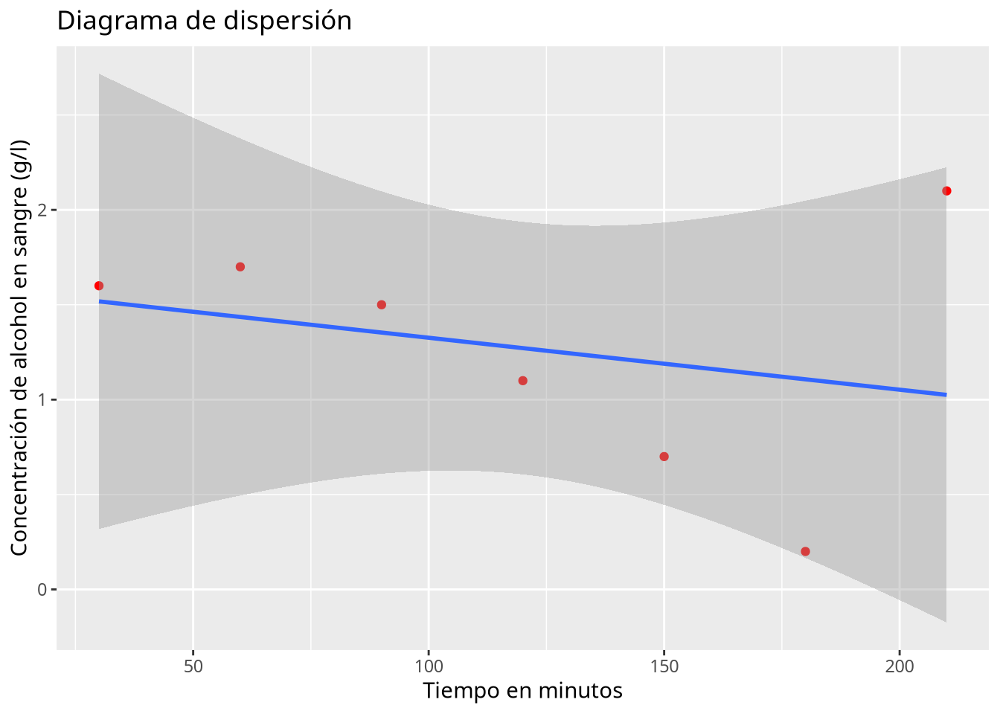
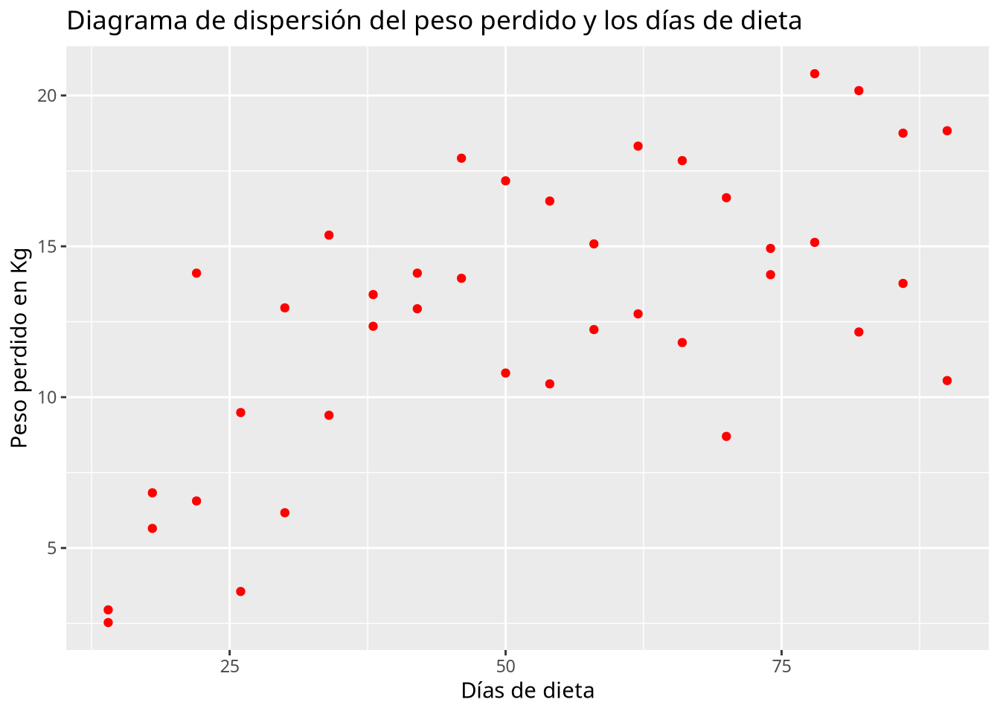

2Prácticas de contrastes de hipótesis paramétricos con R
Ejercicio 2.1 Se sabe que el consumo anual de helado correspondiente a cada español sigue una distribución normal y que el año pasado el consumo medio fue de 20 kg. Queremos contrastar si este año se va a mantener el consumo medio de helado que el año pasado, y para comprobarlo se efectúa una muestra aleatoria de 22 españoles. Los datos obtenidos están disponibles en el fichero consumo-helado.csv.
Realizar el contraste con un nivel de significación de 0.10.
Solución
En primer lugar cargamos los datos en un data frame y mostramos las primeras filas.
library(tidyverse)
── Attaching core tidyverse packages ──────────────────────── tidyverse 2.0.0 ──
✔ dplyr 1.1.4 ✔ readr 2.1.5
✔ forcats 1.0.0 ✔ stringr 1.5.1
✔ ggplot2 3.5.1 ✔ tibble 3.2.1
✔ lubridate 1.9.4 ✔ tidyr 1.3.1
✔ purrr 1.0.2
── Conflicts ────────────────────────────────────────── tidyverse_conflicts() ──
✖ dplyr::filter() masks stats::filter()
✖ dplyr::lag() masks stats::lag()
ℹ Use the conflicted package (<http://conflicted.r-lib.org/>) to force all conflicts to become errors
Como el p-valor es mayor que el nivel de significación 0.05, aceptamos la hipótesis de normalidad.
Aplicamos el contraste t para la media de una población normal.
tidy(t.test(df$helado, mu =20, alternative ="two.sided")) |>kable()
estimate
statistic
p.value
parameter
conf.low
conf.high
method
alternative
19.5
-0.2522277
0.8033173
21
15.37751
23.62249
One Sample t-test
two.sided
Como el p-valor es mayor que el nivel de significación \(0.10\) aceptamos la hipótesis nula y concluimos que no hay evidencias significativas de que el consumo medio de helado este año será distinto del año pasado.
Ejercicio 2.2 En una clase de alumnos de primaria se ha comprobado que el \(20\)% del alumnado consume bollería industrial. Para disminuir esta preocupante cifra, el colegio ha implantado un programa de educación nutricional. Después del programa se tomó una muestra aleatoria de \(50\) alumnos de primaria y se observó que 8 seguían consumiendo bollería industrial. Contrastar con un nivel de significación del \(5\)% si el programa es efectivo.
Solución
tidy(prop.test(8, 50, alternative ="less", p =0.2)) |>kable()
estimate
statistic
p.value
parameter
conf.low
conf.high
method
alternative
0.16
0.28125
0.2979415
1
0
0.273716
1-sample proportions test with continuity correction
less
Como el p-valor es mayor que el nivel de significación \(0.05\), concluimos que no hay evidencias significativas para afirmar que el programa está siendo efectivo.
Ejercicio 2.3 Se ha realizado un estudio para comparar los niveles de hierro en sangre antes y después de un programa de ejercicios. Los datos del estudio están en el fichero niveles-hierro-ejercicio.csv. Realizar el contraste de hipótesis adecuado para ver si el ejercicio aumenta el nivel de hierro con un nivel de significación del 1%.
Solución
En primer lugar cargamos los datos en un data frame y mostramos la primeras filas.
Comprobamos la normalidad de la variable incremento.
tidy(shapiro.test(df$incremento)) |>kable()
statistic
p.value
method
0.9753185
0.860638
Shapiro-Wilk normality test
Aplicamos el contraste t para la comparación de medias de dos poblaciones pareadas.
tidy(t.test(df$Hierro.Despues, df$Hierro.Antes, alternative ="greater", paired =TRUE)) |>kable()
estimate
statistic
p.value
parameter
conf.low
conf.high
method
alternative
0.6669
3.533911
0.0011089
19
0.3405877
Inf
Paired t-test
greater
Como el p-valor es menor que el nivel de significación \(0.01\) aceptamos la hipótesis nula y concluimos que hay evidencias significativas de que el ejercicio aumenta el nivel de hierro. Además, de acuerdo al intervalo de confianza, el incremento de hierro estaría por encima de 0.341 \(\mu\)mol/L$.
Ejercicio 2.4 Se ha realizado un estudio para comparar los niveles de glucosa en sangre de dos grupos: uno sigue una dieta baja en carbohidratos y otro una dieta estándar. Los datos del estudio están en el fichero niveles-glucosa-dietas.csv. Realizar el contraste de hipótesis adecuado para comparar las medias de los dos grupos con un nivel de significación del 5%.
Solución
En primer lugar cargamos los datos en un data frame y mostramos las primeras filas.
Como el p-valor es mayor que el nivel de significación 0.05 en ambos grupos aceptamos la hipótesis de normalidad.
A continuación aplicamos el contraste de comparación de varianzas de poblaciones normales.
tidy(var.test (Glucosa ~ Grupo, data = df)) |>kable()
Multiple parameters; naming those columns num.df, den.df
estimate
num.df
den.df
statistic
p.value
conf.low
conf.high
method
alternative
0.6476997
29
29
0.6476997
0.2481074
0.3082822
1.360814
F test to compare two variances
two.sided
Como el p-valor es mayor que el nivel de significación \(0.05\) asumimos varianzas iguales.
A ahora aplicamos el contraste t para la comparación de medias de dos poblaciones independientes con varianzas iguales.
tidy(t.test(Glucosa ~ Grupo, data = df, alternative ="two.sided", var.equal =TRUE)) |>kable()
estimate
estimate1
estimate2
statistic
p.value
parameter
conf.low
conf.high
method
alternative
-10.42333
83.13
93.55333
-3.980255
0.000194
58
-15.66535
-5.181315
Two Sample t-test
two.sided
Como el p-valor es menor que el nivel de significación \(0.05\) rechazamos la hipótesis nula y concluimos que existen diferencias estadísticamente significativas entre el nivel medio de glucosa en sangre de las dos dietas.
Por último mostramos el diagrama de medias con los respectivos intervalos de confianza.
df |>ggplot(aes(x = Grupo, y = Glucosa, color =I("blue"))) +stat_summary(fun.data =~mean_cl_normal(., conf.int =0.95), geom ="pointrange", position =position_dodge(width =0.5))
Ejercicio 2.5 Se ha realizado un estudio para comparar los niveles de expresión de un gen en función de la dieta (vegetariana u omnívora). Los datos del estudio están en el fichero expresion-genica-dietas.csv. Realizar el contraste de hipótesis adecuado para comparar las medias de los dos grupos.
Solución
En primer lugar cargamos los datos en un data frame y mostramos las primeras filas.
Como el p-valor es mayor que el nivel de significación 0.05 en ambos grupos aceptamos la hipótesis de normalidad.
A continuación aplicamos el contraste de comparación de varianzas de poblaciones normales.
tidy(var.test (Expresion.Genica ~ Grupo, data = df)) |>kable()
Multiple parameters; naming those columns num.df, den.df
estimate
num.df
den.df
statistic
p.value
conf.low
conf.high
method
alternative
1.963548
24
19
1.963548
0.1373252
0.8006898
4.604823
F test to compare two variances
two.sided
Como el p-valor es mayor que el nivel de significación \(0.05\) asumimos varianzas iguales.
Finalmente aplicamos el contraste t para la comparación de medias de dos poblaciones independientes con varianzas iguales.
tidy(t.test(Expresion.Genica ~ Grupo, data = df, alternative ="two.sided", var.equal =TRUE), conf.int =TRUE) |>kable()
estimate
estimate1
estimate2
statistic
p.value
parameter
conf.low
conf.high
method
alternative
0.47992
1.62672
1.1468
4.422438
6.54e-05
43
0.2610699
0.6987701
Two Sample t-test
two.sided
Como el p-valor es menor que el nivel de significación \(0.05\) rechazamos la hipótesis nula y concluimos que existen diferencias estadísticamente significativas entre el nivel medio de expresión génica de las dos dietas. Además, según el intervalo de confianza del 95%, el nivel de expresión génica con la dieta omnívora estaría sería entre \(0.261\) y \(0.699\) mayor que con la dieta vegetariana.
Ejercicio 2.6 Se utiliza un grupo de 150 pacientes para comprobar la teoría de que la vitamina C tiene alguna influencia en el tratamiento del cáncer. Los 150 pacientes fueron divididos en dos grupos de 75. Un grupo recibió 10 gramos de vitamina C y el otro un placebo cada día, además de la medicación habitual. De los que recibieron la vitamina C, 47 presentaban alguna mejoría al cabo de cuatro semanas, mientras que de los que recibieron el placebo, 43 experimentaron mejoría. Contrastar la hipótesis de que la vitamina C tiene influencia en el tratamiento del cáncer con un nivel de significación del 5%.
Solución
tidy(prop.test(c(47, 43), c(75, 75), alternative ="two.sided")) |>kable()
estimate1
estimate2
statistic
p.value
parameter
conf.low
conf.high
method
alternative
0.6266667
0.5733333
0.25
0.6170751
1
-0.1165647
0.2232313
2-sample test for equality of proportions with continuity correction
two.sided
Como el p-valor del contraste es mayor que el nivel de significación \(0.05\), se acepta la hipótesis nula y se concluye que no hay evidencias significativas de que la vitamina C influya en el tratamiento del cáncer.
Ejercicio 2.7 En un estudio sobre el consumo de alcohol entre los jóvenes durante los fines de semana, se preguntó a 100 chicos y a 125 chicas, de los que 63 chicos y 59 chicas contestaron que consumían. En vista de estos datos, ¿existe alguna diferencia significativa entre las proporciones de chicos y chicas que consumen alcohol los fines de semana?
Solución
tidy(prop.test(c(63, 59), c(100, 125), alternative ="two.sided"), conf.int =TRUE) |>kable()
estimate1
estimate2
statistic
p.value
parameter
conf.low
conf.high
method
alternative
0.63
0.472
4.968989
0.0258057
1
0.0201075
0.2958925
2-sample test for equality of proportions with continuity correction
two.sided
Como el p-valor del contraste es menor que el nivel de significación \(0.05\), se rechaza la hipótesis nula y se concluye que hay diferencias estadísticamente significativas entre la proporción de chicos y chicas que consumen alcohol los fines de semana. Además, según el intervalo de confianza del 95%, el porcentaje de chicos sería entre un \(2.01\)% y un \(29.6\)% mayor que el de chicas.
Ejercicio 2.8 En un estudio de genómica nutricional, se evalúa cómo afecta la suplementación con diferentes tipos de macronutrientes a la expresión de un gen relacionado con el metabolismo energético. Los investigadores dividen a los participantes en tres grupos, cada uno recibiendo una dieta suplementada (1 carbohidratos, 2 proteínas y 3 grasas).Se mide el nivel de expresión génica (ΔCt, relativo a un gen de referencia) en 25 individuos por grupo. Los resultados se recogen en el fichero expresion-genica-suplementacion.csv. Realizar el contraste de hipótesis adecuado para comparar ver si hay diferencias estadísticamente significativas entre las expresiones génicas de los tres grupos.
Solución
En primer lugar cargamos los datos en un data frame y mostramos las primeras filas.
Aplicamos el contraste de ANOVA para la comparación de medias de más de dos poblaciones independientes.
anova <-aov(Expresion.genica ~ Suplementacion, data = df)tidy(anova) |>kable()
term
df
sumsq
meansq
statistic
p.value
Suplementacion
2
1.068009
0.5340044
9.171666
0.000283
Residuals
72
4.192075
0.0582233
NA
NA
Como el p-valor es menor que el nivel de significación \(0.05\), rechazamos la hipótesis nula y concluimos que existen pruebas estadísticamente significativas de que el nivel de expresión génica depende del la dieta.
A continuación comprobamos si se cumplen los requisitos del contraste de ANOVA.
Normalidad de los residuos.
residuals <-residuals(anova)par(mfrow =c(1, 2)) hist(residuals)qqnorm(residuals, main ="Q-Q Plot of Residuals")qqline(residuals, col ="red", lwd =2)
tidy(shapiro.test(residuals)) |>kable()
statistic
p.value
method
0.9926311
0.9455761
Shapiro-Wilk normality test
Tanto el histograma como el gráfico de cuantiles no muestran una desviación significativa de una distribución normal, y como el p-valor del contraste de normalidad es mayor que el nivel de significación \(0.05\), se asume que los residuos siguen una distribución normal.
Homogeneidad de varianzas. Aplicamos el test de Levene para la comparación de varianzas.
library(car)
Cargando paquete requerido: carData
Adjuntando el paquete: 'car'
The following object is masked from 'package:dplyr':
recode
The following object is masked from 'package:purrr':
some
tidy(leveneTest(Expresion.genica ~ Suplementacion, data = df)) |>kable()
Warning in leveneTest.default(y = y, group = group, ...): group coerced to
factor.
statistic
p.value
df
df.residual
1.582187
0.2125867
2
72
Como el p-valor es mayor que el nivel de significación \(0.05\) se acepta la hipótesis nula y se asume homogeneidad de varianzas.
Así pues, se cumplen los requisitos para el contraste de ANOVA.
Finalmente hacemos una comparación de medias por pares para ver entre qué grupos hay diferencias estadísticamente significativas.
tidy(TukeyHSD(anova)) |>kable()
term
contrast
null.value
estimate
conf.low
conf.high
adj.p.value
Suplementacion
Grasas-Carbohidratos
0
0.25928
0.0959528
0.4226072
0.0008694
Suplementacion
Proteinas-Carbohidratos
0
0.24652
0.0831928
0.4098472
0.0016018
Suplementacion
Proteinas-Grasas
0
-0.01276
-0.1760872
0.1505672
0.9809191
Se observan diferencias estadísticamente significativas entre las medias de la dieta basada en grasas y la basada en carbohidratos (p-valor \(0.0008 < 0.05\)) y también entre la dieta basada en proteínas y la basada en carbohidratos (p-valor \(0.0016 < 0.05\)), pero no entre la dieta basada en proteínas y la basada en grasas (p-valor \(0.981 > 0.05\)).
tidy(TukeyHSD(anova)) |>ggplot(aes(x = contrast, y = estimate)) +geom_errorbar(aes(ymin = conf.low, ymax = conf.high), width =0.2, color ="blue") +geom_point(size =3, color ="red") +geom_hline(yintercept =0, linetype ="dashed")
Ejercicio 2.9 En un estudio diseñado para analizar la influencia de un tipo de dieta y de un fármaco en el peso corporal perdido, se ha anotado el número de Kg perdidos en un grupo de personas al cabo de 3 meses de dieta y de tomar el fármaco en el fichero interaccion-dieta-farmaco.csv. Realizar el contraste de hipótesis adecuado para ver si el peso perdido depende de la dieta, del fármaco y de la interacción entre ambos.
Solución
En primer lugar cargamos los datos en un data frame y mostramos las primeras filas.
`summarise()` has grouped output by 'Dieta'. You can override using the
`.groups` argument.
Dieta
Farmaco
n
media
desviación_típica
No
No
5
0.000000
1.0606602
No
Si
6
5.166667
1.4375906
Si
No
5
3.000000
0.7905694
Si
Si
6
12.000000
1.1832160
Aplicamos el contraste de ANOVA de dos factores para la comparación de medias de más de dos poblaciones independientes.
anova <-aov(Perdida_peso ~ Dieta * Farmaco, data = df)tidy(anova) |>kable()
term
df
sumsq
meansq
statistic
p.value
Dieta
1
142.54545
142.545455
105.44458
0.0000000
Farmaco
1
273.67424
273.674242
202.44396
0.0000000
Dieta:Farmaco
1
20.03788
20.037879
14.82254
0.0011731
Residuals
18
24.33333
1.351852
NA
NA
Se observa que la dieta es significativa (p-valor \(5.93e-9 < 0.05\)), el fármaco es significativo (p-valor \(3.11e-11 < 0.05\)) y también la interacción entre la dieta y el fármaco es significativa (p-valor \(0.00117 < 0.05\)).
A continuación comprobamos si se cumplen los requisitos del contraste de ANOVA.
Normalidad de los residuos.
residuals <-residuals(anova)par(mfrow =c(1, 2)) hist(residuals)qqnorm(residuals, main ="Q-Q Plot of Residuals")qqline(residuals, col ="red", lwd =2)
tidy(shapiro.test(residuals)) |>kable()
statistic
p.value
method
0.967452
0.6521599
Shapiro-Wilk normality test
Tanto el histograma como el gráfico de cuantiles no muestran una desviación significativa de una distribución normal, y como el p-valor del contraste de normalidad es mayor que el nivel de significación \(0.05\), se asume que los residuos siguen una distribución normal.
Homogeneidad de varianzas. Aplicamos el test de Levene para la comparación de varianzas.
library(car)tidy(leveneTest(Perdida_peso ~ Dieta * Farmaco, data = df)) |>kable()
statistic
p.value
df
df.residual
0.2715568
0.845079
3
18
Como el p-valor es mayor que el nivel de significación \(0.05\) se acepta la hipótesis nula y se asume homogeneidad de varianzas.
Así pues, se cumplen los requisitos para el contraste de ANOVA.
Finalmente hacemos una comparación de medias por pares para ver entre qué grupos hay diferencias estadísticamente significativas.
tidy(TukeyHSD(anova)) |>kable()
term
contrast
null.value
estimate
conf.low
conf.high
adj.p.value
Dieta
Si-No
0
5.090909
4.0493279
6.132490
0.0000000
Farmaco
Si-No
0
7.083333
6.0374212
8.129245
0.0000000
Dieta:Farmaco
Si:No-No:No
0
3.000000
0.9216855
5.078315
0.0035774
Dieta:Farmaco
No:Si-No:No
0
5.166667
3.1768320
7.156501
0.0000046
Dieta:Farmaco
Si:Si-No:No
0
12.000000
10.0101653
13.989835
0.0000000
Dieta:Farmaco
No:Si-Si:No
0
2.166667
0.1768320
4.156501
0.0300974
Dieta:Farmaco
Si:Si-Si:No
0
9.000000
7.0101653
10.989835
0.0000000
Dieta:Farmaco
Si:Si-No:Si
0
6.833333
4.9361004
8.730566
0.0000000
Se observan diferencias estadísticamente significativas entre todos los grupos de comparación.
tidy(TukeyHSD(anova)) |>ggplot(aes(x = contrast, y = estimate)) +geom_errorbar(aes(ymin = conf.low, ymax = conf.high), width =0.2, color ="blue") +geom_point(size =3, color ="red") +geom_hline(yintercept =0, linetype ="dashed")
Ejercicio 2.10 Después de tomar un litro de vino se ha medido la concentración de alcohol en la sangre en distintos instantes, obteniendo los siguientes datos
Calcular el coeficiente de correlación lineal. ¿Existe relación lineal entre la concentración de alcohol y el tiempo que pasa?
Solución
Para calcular el coeficiente de correlación lineal de Pearson se puede utilar la función cor del paquete stats.
cor(df$Tiempo, df$Alcohol)
[1] -0.2730367
El valore del coeficiente de correlación lineal es muy bajo, por lo que aparentemente no hay relación lineal entre la concentración de alcohol en sangre y el tiempo que pasa.
Dibujar el diagrama de dispersión correspondiente y la recta de regresión de la concentración de alcohol sobre el tiempo. ¿Por qué el ajuste es tan malo?
Solución
library(ggplot2)ggplot(df, aes(x = Tiempo, y = Alcohol)) +geom_point(col ="red") +geom_smooth(method ="lm") +labs(title ="Diagrama de dispersión", x ="Tiempo en minutos", y ="Concentración de alcohol en sangre (g/l)")
`geom_smooth()` using formula = 'y ~ x'

El ajuste es malo porque hay un dato atípico que no sigue la misma tendencia que el resto.
Eliminar el dato atípico y calcular la recta de la concentración de alcohol sobre el tiempo. ¿Ha mejorado el modelo?
Solución
# Eliminamos el dato atípico que está en la fila df <- df[-c(7), ]recta_alcohol_tiempo <-lm(Alcohol ~ Tiempo, df) summary(recta_alcohol_tiempo)
Call:
lm(formula = Alcohol ~ Tiempo, data = df)
Residuals:
1 2 3 4 5 6
-0.27619 0.12095 0.21810 0.11524 0.01238 -0.19048
Coefficients:
Estimate Std. Error t value Pr(>|t|)
(Intercept) 2.173333 0.201927 10.763 0.000423 ***
Tiempo -0.009905 0.001728 -5.731 0.004591 **
---
Signif. codes: 0 '***' 0.001 '**' 0.01 '*' 0.05 '.' 0.1 ' ' 1
Residual standard error: 0.2169 on 4 degrees of freedom
Multiple R-squared: 0.8914, Adjusted R-squared: 0.8643
F-statistic: 32.84 on 1 and 4 DF, p-value: 0.004591
La recta de regresión de la concentración de alcohol en sangre sobre el tiempo es \(\textsf{alcohol}= 2.1733333 + -0.0099048 \textsf{tiempo}\).
El modelo ha mejorado notablemente ya que ahora el coeficiente de determinación lineal \(R^2=0.8914286\), que está muy próximo a 1.
Según el modelo de regresión lineal, ¿a qué velocidad metaboliza esta persona el alcohol?
Solución
cat(paste("Coeficiente de regresión de la concentración de alchol sobre el tiempo:", recta_alcohol_tiempo$coefficients[["Tiempo"]]))
Coeficiente de regresión de la concentración de alchol sobre el tiempo: -0.00990476190476191
Así pues, la velocidad de metabolización del alcohol es 0.0099048 g/l\(\cdot\)min.
Si la concentración máxima de alcohol en la sangre que permite la ley para poder conducir es \(0.3\) g/l, ¿cuánto tiempo habrá que esperar después de tomarse un litro de vino para poder conducir sin infringir la ley? ¿Es fiable esta predicción?
Solución
Como ahora queremos predecir el tiempo, necesitamos calcular la recta de regresión del tiempo sobre la concentración de alcohol.
Rows: 40 Columns: 3
── Column specification ────────────────────────────────────────────────────────
Delimiter: ","
chr (1): ejercicio
dbl (2): dias, peso.perdido
ℹ Use `spec()` to retrieve the full column specification for this data.
ℹ Specify the column types or set `show_col_types = FALSE` to quiet this message.
df
# A tibble: 40 × 3
dias peso.perdido ejercicio
<dbl> <dbl> <chr>
1 14 2.95 no
2 18 5.65 no
3 22 6.56 no
4 26 3.56 no
5 30 6.17 no
6 34 9.4 no
7 38 12.4 no
8 42 12.9 no
9 46 13.9 no
10 50 10.8 no
# ℹ 30 more rows
Dibujar el diagrama de dispersión de los kilos perdidos en función del número de días con la dieta. ¿Qué tipo de modelo de regresión se ajusta mejor a la nube de puntos?
Solución
library(ggplot2)ggplot(df, aes(x = dias, y = peso.perdido)) +geom_point(col ="red") +labs(title ="Diagrama de dispersión del peso perdido y los días de dieta", x ="Días de dieta", y ="Peso perdido en Kg")

La nube de puntos es bastante difusa aunque parece apreciarse una tendencia logarítmica o sigmoidal.
Calcular los coeficientes de determinación lineal, cuadrático, exponencial, logarítmico, potencial, inverso y sigmoidal. ¿Qué tipo de modelo explica mejor la relación entre los kilos perdidos y el número de días de dieta? ¿Qué porcentaje de la variabilidad de peso perdido explica el mejor modelo de regresión?
The following object is masked from 'package:dplyr':
group_rows
# Construimos un data frame con el ajuste de los modelos.modelos <-tibble(Lineal =list(lm(peso.perdido ~ dias, df)),Cuadratico =list(lm(peso.perdido ~ dias +I(dias^2), df)),Exponencial =list(lm(log(peso.perdido) ~ dias, df)),Logaritmico =list(lm(peso.perdido ~log(dias), df)),Potencial =list(lm(log(peso.perdido) ~log(dias), df)),Inverso =list(lm(peso.perdido ~I(1/dias), df)),Sigmoidal =list(lm(log(peso.perdido) ~I(1/dias), df)), ) |># # Reestructuramos el data frame para tener todos los modelos en la misma columna.pivot_longer(everything(), names_to ="Tipo_Modelo", values_to ="Modelo") |># Obtenemos un resumen del ajuste de cada modelo en formato organizado (se obtiene una lista con los parámetros que describen el ajuste de cada modelo).mutate(Resumen =map(Modelo, glance)) |># Desanidamos el resumen (se obtiene una columna para cada parámetro del resumen del ajuste de los modelos).unnest(Resumen) |># Ordenamos el data frame por el coeficiente de determinación.arrange(-r.squared)modelos |>select(Tipo_Modelo, r.squared) |>kable(col.names =c("Tipo de Modelo", "R²")) |>kable_styling(full_width = F)
Tipo de Modelo
R²
Sigmoidal
0.6662170
Potencial
0.5684490
Inverso
0.5583853
Cuadratico
0.5397848
Logaritmico
0.5254856
Lineal
0.4356390
Exponencial
0.4308936
El mejor modelo es el Sigmoidal que explica el 66.6216965% de la variabilidad del peso perdido.
Dibujar el diagrama de dispersión de los kilos perdidos en función del número de días con la dieta según si la persona hace ejercicio o no. ¿Qué conclusiones se pueden sacar?
Solución
library(ggplot2)ggplot(df, aes(x = dias, y = peso.perdido, color = ejercicio)) +geom_point() +labs(title ="Diagrama de dispersión del peso perdido y los días de dieta", x ="Días de dieta", y ="Peso perdido en Kg")
Claramente la nube de puntos de las personas que hacen ejercicio está por encima de la de los que no hacen ejercicio, lo que indica que hacer ejercicio favorece la pérdida de peso. Los más razonable es construir modelos de regresión para cada grupo.
¿Qué tipo de modelo explica mejor la relación entre el peso perdido y los días de dieta en el grupo de las personas que hacen ejercicio? ¿Y en el grupo de las que no hacen ejercicio? ¿Han mejorado los modelos con respecto al modelo anterior?
Solución
modelos <- df |># Anidamos por la columna ejercicio.nest_by(ejercicio) |># Ajustamos los modelos de regresión.mutate(Lineal =list(lm(peso.perdido ~ dias, data)),Cuadratico =list(lm(peso.perdido ~ dias +I(dias^2), data)),Exponencial =list(lm(log(peso.perdido) ~ dias, data)),Logaritmico =list(lm(peso.perdido ~log(dias), data)),Potencial =list(lm(log(peso.perdido) ~log(dias), data)),Inverso =list(lm(peso.perdido ~I(1/dias), data)),Sigmoidal =list(lm(log(peso.perdido) ~I(1/dias), data)), ) |># Reestructuramos el data frame para tener todos los modelos en la misma columna.pivot_longer(-c(ejercicio, data), names_to ="Tipo_Modelo", values_to ="Modelo") |># Obtenemos un resumen del ajuste de cada modelo en formato organizado (se obtiene una lista con los parámetros que describen el ajuste de cada modelo).mutate(Resumen =map(Modelo, glance)) |># Desanidamos el resumen (se obtiene una columna para cada parámetro del resumen del ajuste de los modelos).unnest(Resumen) |># Ordenamos el data frame por la columna ejercicio y por el coeficiente de determinación.arrange(ejercicio, -r.squared) modelos |>select(ejercicio, Tipo_Modelo, r.squared) |>kable(col.names =c("Ejercicio", "Tipo de Modelo", "R²")) |>pack_rows(index =table(modelos$ejercicio)) |>kable_styling(full_width = F)
Ejercicio
Tipo de Modelo
R²
no
no
Sigmoidal
0.7401212
no
Cuadratico
0.7100610
no
Inverso
0.6796880
no
Potencial
0.6700051
no
Logaritmico
0.6494521
no
Lineal
0.5286338
no
Exponencial
0.5222832
si
si
Inverso
0.8470993
si
Sigmoidal
0.8305013
si
Logaritmico
0.7885173
si
Cuadratico
0.7791671
si
Potencial
0.6704843
si
Lineal
0.6623502
si
Exponencial
0.4945564
El mejor modelo en el grupo de los que hacen ejercicio es el inverso y en el grupo de los que no el sigmoidal. Los modelos han mejorado bastante con respecto al modelo anterior, sobre todo el del grupo de personas que hace ejercicio.
Construir el mejor modelo de regresión del peso perdido sobre los días de dieta para el grupo de las personas que hacen ejercicio y para el grupo de las que no.
Solución
Construimos el modelo inverso para el grupo de las personas que hacen ejercicio.
Call:
lm(formula = log(peso.perdido) ~ I(1/dias), data = df[df$ejercicio ==
"no", ])
Residuals:
Min 1Q Median 3Q Max
-0.66026 -0.07192 0.04678 0.13142 0.29633
Coefficients:
Estimate Std. Error t value Pr(>|t|)
(Intercept) 2.8694 0.1021 28.09 2.55e-16 ***
I(1/dias) -24.4226 3.4111 -7.16 1.15e-06 ***
---
Signif. codes: 0 '***' 0.001 '**' 0.01 '*' 0.05 '.' 0.1 ' ' 1
Residual standard error: 0.2417 on 18 degrees of freedom
Multiple R-squared: 0.7401, Adjusted R-squared: 0.7257
F-statistic: 51.26 on 1 and 18 DF, p-value: 1.146e-06
Según los mejores modelos de regresión en cada caso, ¿cuántos kilos perderá una persona que hace ejercicio tras 100 días de dieta? ¿Y una que no hace ejercicio?
Solución
Hacemos primero la predicción del peso perdido para la persona que hace ejercicio usando el modelo inverso.
Y ahora hacemos la predicción del peso perdido para la persona que no hace ejercicio usando el modelo sigmoidal.
# El modelo sigmoidal devuelve el logaritmo del peso perdido por lo que hay que aplicar la función exponencial para obtener el peso perdido.exp(predict.lm(sigmoidal_no_ejercicio, newdata =list(dias =100)))